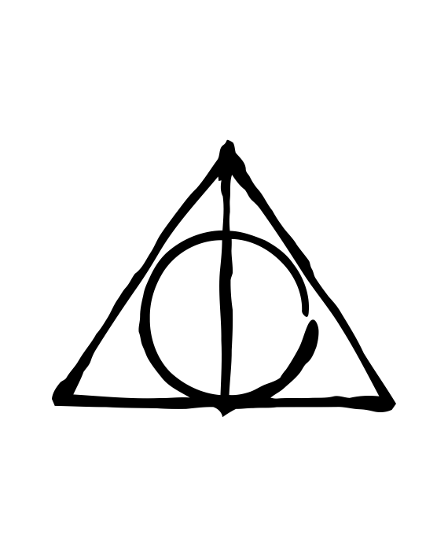

Las tres Reliquias de la muerte
En el siguiente video se explica la historia que le cuenta el padre de Luna a Harry Potter y sus amigos sobre las tres reliquias de la muerte...
Capa Invisibilidad
Varita de Sauco
Piedra Filosofal

En el siguiente video se explica la historia que le cuenta el padre de Luna a Harry Potter y sus amigos sobre las tres reliquias de la muerte...